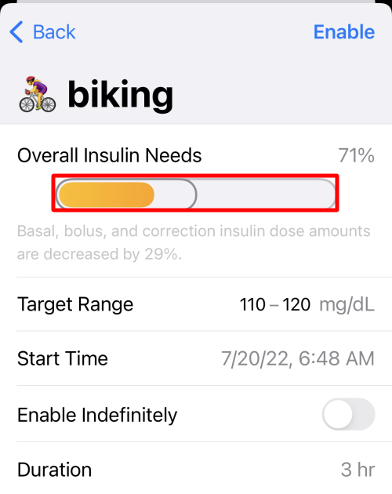

Overrides
New Loopers - Please Read¶
Please do not use this feature until you understand it.
Many new Loopers interpret Loop Overrides as a one-for-one replacement for manual pump options where a temporary basal was applied for a particular activity. Although Loop Overrides can help in a situation where you previously used a temporary basal rate, overrides are more powerful.
Changing Overall Insulin Needs is NOT like Manual Pump Temp Basal Change
Loop Overrides are not the same as adjusting temporary basal on a manual pump. The easiest way to restrict basal rates with an automated system is to raise your correction target temporarily. In some cases, you may need to also adjust insulin needs, but begin just by changing that target.
When you modify insulin needs, you are affecting basal rates, carb ratios, and insulin sensitivity factors (ISF) for the duration of the override.
A common mistake is to think selecting an override with 10% Overall Insulin Needs is like selecting 10% basal rate with a manual pump. With Loop, that selection modifies all your normal settings by a factor of 10!
Manual Temp Basal¶
Sometimes you need to set a manual temp basal and you need it to keep working whether you are near your gear. There's a function for that with Loop 3.
- Pods: use the Manual Temp Basal setting
- Medtronic: select Open Loop and use your Medtronic pump temp basal feature
How Overrides Work¶
Overrides let Loop know selected settings are modified for the duration of the override. The override can change either the correction range or the overall insulin needs or both. When you set an override on insulin needs, the override adjusts basal schedule, ISF, and CR together. Examples where this can be helpful include hormone cycles, steroid medications, and/or exercise.
Override presets are (1) optional and (2) can be configured within Loop's workout icon (the little blue heart icon in the Loop toolbar). Once override presets are created, they can be turned on/off by using the workout icon as well.

Features of an Override¶
Overrides allow you to specify:
- an overall insulin needs adjustment
- a correction target range
- a duration in 15-minute increments (or indefinite)
- a start time
The override only works when your Loop gear is with you. For example, if Loop sets a zero temporary basal rate based on an override and then you leave your gear behind; at the end of half an hour, your pump will resume scheduled insulin delivery.

The target range replaces the correction range target for the duration of the override.
- If the target range is left blank, your scheduled correction range continues to be in effect
- If the target range is specified, that range is used instead of your scheduled correction range
The overall insulin needs is applied to your basal rates, insulin sensitivities and carb ratios for the duration of the override.
- If the insulin needs is left at 100%, no change is made to basal rates, ISF or CR
- If you set an overall insulin needs adjustment below 100%, you are telling Loop you are more insulin sensitive and need a lighter touch.
- Loop uses basal rates decreased from scheduled rates
- Loop uses ISF and CR numbers increased from settings
- If you set an overall insulin needs adjustment above 100%, you are telling Loop you are less insulin sensitive and need a heavier touch.
- Loop uses basal rates increased from scheduled rates
- Loop uses ISF and CR numbers decreased from settings
- While the override is active, the modified basal rates, ISF and CR are applied for every automated or manual insulin delivery and affect the calculation for future IOB while the override is active
- Those ISF and CR numbers are associated with the carbs and/or insulin delivered during the override
- As the carbs and/or insulin "ages" during their absorption-time/duration-of-action, Loop maintains the sensitivity values associated with those during-the-override entries
For an override to be accepted:
- You must change either insulin needs or target range
- A named override can be saved and used again
- To save the override, you must supply a name and an icon
- Named overrides can be set to occur at a scheduled time
- A Custom override is used only once
- Any override can be edited while it is active
Future Override¶
When an override is scheduled to start in the future, it can have an effect earlier than you might think. The closed loop automated insulin increase or restriction at each cycle is calculated to map your predicted glucose to the desired target range over the duration of insulin action (6 hours). If the future override has a higher target, that higher target is factored into the Loop calculations.
Example:
- At 10 pm, you set an override with a higher correction range target to start the following morning at 6 am
- At approximately midnight, Loop will begin taking that future target into account in the dosing for each Loop cycle
- By the time you awaken at 6 am, Loop should have your glucose in that higher target range
- The insulin needs modification, if any, associated with that override do not affect the Loop prediction until the scheduled start time for the override
How Overrides Do NOT Work¶
Overrides will work while you are Looping. Sounds obvious, right? But, the thing to remember is that the adjustments (multipliers) that overrides make are not saved back to your Medtronic pump or Omnipod. They only exist in the Loop app.
If you walk away from iPhone and/or RileyLink...
If you stop Looping (i.e., walk away from your gear or your glucose reading is stale), your existing temp basal will complete the remainder of whatever is left of its original 30 minutes and you will return to scheduled basal rates in your Therapy Settings. Your adjusted needs as set-up in any override will not continue if your Loop is not running properly. So you cannot set a 50% override and then hop in the ocean for a 2-mile swim without your iPhone and RileyLink and expect decreased basals of 50%. Just be aware that in situations where you need prolonged lower basals while away from Looping gear, you will need to edit your scheduled basals or use a Manual Temp Basal setting.
Avoid Extreme Insulin Needs Setting¶
There have been users who select a 10% overall insulin need. This is NOT the same as choosing a 10% temporary basal with the PDM. This changes your basal rates, ISF and CR by a factor of 10!
Scenario for 10% Insulin Need
- User really wants insulin reduced and chooses 10% insulin need
- User doesn't think about the 10% and enters carbs while the override is active
- Loop suggests a tiny bolus and the user accepts
- User goes high because CR was 10 times higher than Therapy Setting Value
- User stays high because ISF is also 10 times higher than Therapy Setting Value
- Automated corrections are 10% of typical corrections
- Basal supplied is 10% of the Therapy Setting value
- OR
- Loop suggests a tiny bolus and the user manually boluses the amount they know the food needs
- User glucose may be normal BUT
- Loop predicts a negative eventual glucose (prediction only - this will never happen)
- Loop immediately withholds all basal until prediction normalizes
- User glucose may be normal BUT
- Loop suggests a tiny bolus and the user accepts
Instead of selecting 10%, raise your correction range with a moderate needs adjustment. Loop tends to suspend insulin delivery via temp basals with the next CGM reading.
With Loop 3, there is now a warning message in the meal entry screen when an override is active with an overall insulin needs value other than 100%. The user can decide whether to proceed with the meal entry with the override active.
If you feel the need to immediately halt insulin delivery, consider a Manual Temp Basal or suspend command to the pump. If you choose to suspend, be sure to pay attention to the reminder to resume insulin delivery later.
Extreme Athletes
There are athletes who do need those extreme overall insulin need changes and know how to use them appropriately. This typically involves extreme or prolonged exercise.
Create an Override Preset¶
To create an override preset, tap on the workout icon. Then click the + sign in the upper right corner to start a new preset entry.
You must select an emoji, name the preset and modify either the overall insulin needs or target range or both to save your new preset
- Pick an emoji
- Enter a name for the preset
- Optional: change insulin needs
- Default is 100% - no change to your settings
- You may use the picker wheel or Select 1% Insulin Needs increments
- Optional: enter a target range
- If you do not enter a target range, Loop will use your existing scheduled target range
- Select whether you want the override to run indefinitely or for a finite time
When you've made your selections, save the preset using the "Save" button in the upper right corner.
Select 1% Insulin Needs¶
Available with Loop 3.
The selectable Overall Insulin Needs values are not limited by the default picker values of 10%.
- When adjusting Needs, press and hold the "orange" bar, highlighted by the red rectangle in the graphic below
- Move your finger left and right to adjust by 1%
- Release to select the desired level

Activate an Override¶
To enact your override preset, tap on the workout icon toolbar and select an override from your list of saved presets, create a new one or use the custom override for one-time use.

The heart will be highlighted in a blue square while active and the HUD Status Row will indicate the active override name. The Glucose Chart will show a darker blue bar indicating the active target range and duration.

Schedule an Override¶
You can set up a future start time when selecting a saved override by tapping on the calendar icon to the right of the override. Adjust the "Start time" row. Tap the "Enable" button in the top right corner.
A Future Override can be very helpful, for example, to set an exercise override the night before your workout. You'll wake up with less insulin on board and at your desired exercise targets.
Deactivating an Override¶
Tap the heart icon to turn off your override at any time. This happens without confirmation, so be sure to lock your phone when you have an override running to avoid accidentally turning it off.
Override presets with a finite duration will automatically deactivate when the duration is over.
Apple Watch¶
Saved overrides can be turned on and off by tapping on the blue heart icon on your watch.
Editing an Active Override¶
Tap on the active override in the HUD Status Row with the phone in portrait orientation. This brings up a screen to edit the override currently running.
This only affects this override during the current period. It is not saved to that named override. For example, you can extend the duration or modify the needs value or target value based on a temporary situation.
Higher Priority Messages
If the HUD Status Row is displaying a higher priority message, you must wait for that message to complete before you'll be able to edit an active override. If you want to edit an active override, you can choose to cancel an active bolus and edit the override immediately. The edited override will then be in effect for the next Loop cycle or manual recommendation.
HUD Status Row messages with higher priority:
- Bolus starting, in-progress or canceling
- Pump suspended
- No recent glucose
Remote Overrides¶
You can also use your Nightscout site to activate/deactivate your Loop's override presets. To accomplish this, you will need to do some legwork as outlined on this page for how to set up Remote Overrides in Nightscout and you will need to be using a paid Apple developer account. Remote overrides require Apple Push Notifications service, and that is only available on paid accounts.